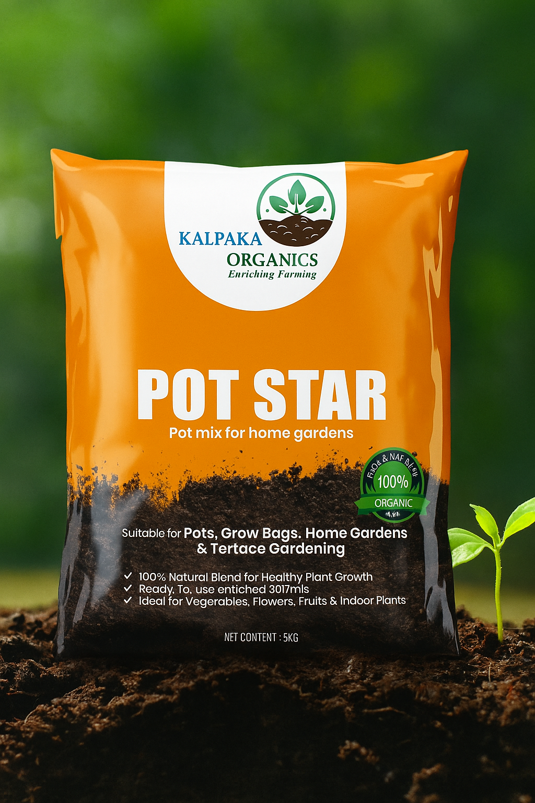

About Pot Star (உர மண் கலவை)

Product Description
Best For
Composition
Organic Compost
Enriches soil with nutrients
Vermi Compost
Enhances microbial activity
Red Soil
Provides natural minerals
Cocopeat
Retains moisture & improves aeration
Neem Cake
Natural pest repellent
Bio-enhancers
Improve soil fertility by micronutrients